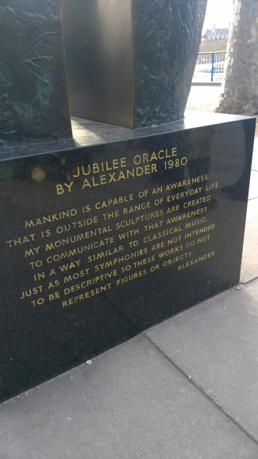

Wanted to share my like, dislike, feelings and learning from my UK trip that happened last year December 5 - December 14
It was a very emotional trip, with both good and bad and I could not share my entire experience here(I let many of those stay in my journal). Here are some few things that I wanted to share here.
The British Airways safety video was funny and touching, it was a good video that kept the audience engaging and conveyed what they wanted to tell.
Our connecting flight was from Heathrow to Edinburgh and the pilot announcement was very natural, and lively. He gave a live commentary on the view of sun set in Edinburgh that evening as he announced the landing, it was more human.
At Edinburgh, we stayed at the Marriott hotel. And I don't know why, I woke up at 3AM everyday. I could not sleep after that and I walked down the reception and sat down at a sofa there, the ambiance was great. There was absolute silence and there was just this light music that was playing in the background. I did not understand it but it just had a feeling. The casual, light, expression of something that could only be experienced. This quote fitted in nicely with this feeling.
In India, I have felt such feelings in our folk songs that just comes on the flow(and not commercial) and gets into us. I think in movies these feelings are different. Many movie songs gets its meaning with the movie's theme. But this was different and true.
The menu card of the hotel was good as well, it was a work of art, had jokes in it and was an enjoyable stuff.
Entrepreneurial Spark is the only, truly free, amazing thing that I have ever heard. It is a great initiative, to encourage and develop entrepreneurs, with a wonderful team and environment to work with. Very inspiring and lovely. Congrats guys!
Tate modern was the best part of the trip, I actually went there on the last day. If I had gone there before I would have gone there every other day as well. It had arts that expressed the need for artistic expression. They had some featured videos playing there which had records about artists and their works.
The best parts for me in Tate modern feature videos were Simon Norfork's explanation of beauty which answered my search on the meaning of beauty and Tatlin's whisper.
It is a wonder art gallery to visit. Very deep and moving. They change the art everyday on a rotation basis, i guess. And it is free to visit. Many tate videos are available online, but the environment there cannot be got anywhere else.
Snow is overrated. Snow gives a terrible feeling, it feels bad. It will be good to watch it from inside the room through the window. But when I felt it I regretted my decision on taking this trip.
Seriously, snow is terrible, miserable and painful.